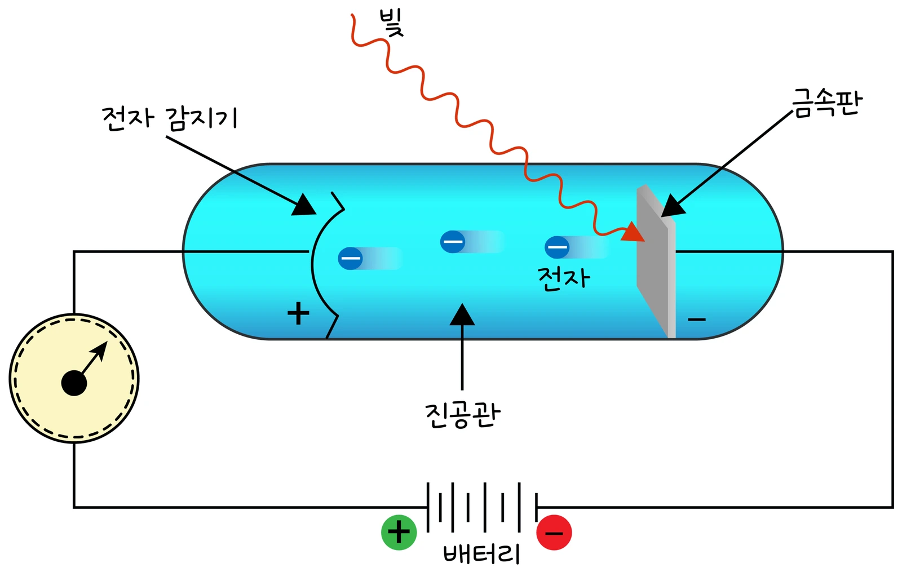

고2 물리학 · Ⅲ 빛과 물질 · 웹툰 15화 「전자로 보는 현미경」
실험에서 금속(세슘·칼륨·나트륨·아연)과 빛의 파장·밝기를 바꿔 가며 광전류가 0이 되는 저지 전압을 쟀습니다. 밝기는 전류만 바꾸고 저지 전압은 진동수에만 따라 커졌으며, 문턱 진동수보다 낮은 빛은 아무리 밝아도 전자가 안 나왔습니다. V_s–f 그래프의 기울기는 금속과 무관하게 h/e였습니다. 광전 효과와 빛의 이중성을 정리합니다.
실험 데이터 되짚기
일함수는 CRC 핸드북의 다결정 금속 값, hc = 1,240 eV·nm입니다.
| 빛 (광자 에너지) | 세슘 (W 2.14 eV) | 칼륨 (2.29) | 나트륨 (2.75) | 아연 (4.33) |
|---|---|---|---|---|
| 초록 546.1 nm (2.27 eV) | 0.13 V | 안 나옴 | 안 나옴 | 안 나옴 |
| 보라 404.7 nm (3.06 eV) | 0.92 V | 0.77 V | 0.31 V | 안 나옴 |
| 자외선 253.7 nm (4.89 eV) | 2.75 V | 2.60 V | 2.14 V | 0.56 V |
| 문턱 파장 1240 ÷ W | 579 nm | 541 nm | 451 nm | 286 nm |
V_s–f 그래프: 기울기 h/e = 4.14 × 10⁻¹⁵ V·s로 금속과 무관, f축 절편이 문턱 진동수, V축 절편이 −W/e. 속이 빈 점(전자가 안 나온 기록)은 진동수가 문턱보다 낮은 경우입니다. 밝기를 2배로 하면 광전류만 2배, 저지 전압은 그대로.
금속에 빛을 비추면 전자가 튀어나오는 광전 효과는 파동 이론으로 설명되지 않습니다: ① 빛의 진동수가 문턱 진동수보다 낮으면 아무리 밝아도 전자가 안 나오고, ② 전자의 최대 운동 에너지는 밝기가 아니라 진동수에 따라 커지며, ③ 전자는 비추는 즉시 나옵니다. 아인슈타인(1905)은 빛이 에너지 E = hf인 광자로 되어 있고 광자 하나가 전자 하나에 에너지를 통째로 준다고 설명했습니다: K_max = hf − W(W: 일함수 — 전자를 떼어내는 데 필요한 최소 에너지). 밝기는 광자 수만 늘려 전류(전자 수)만 커집니다. 웹툰 15화: 밝은 빨간빛을 아무리 오래 비춰도 검전기의 금속박은 그대로, 희미한 자외선을 비추자 곧바로 오므라듭니다.
교재 그림
광전관 — 빛을 받은 금속판에서 전자가 튀어나온다

튀어나온 전자가 (+)쪽 전자 감지기에 모이면 검류계에 광전류가 흐릅니다. 전지의 방향을 반대로 걸어(역전압) 전류가 0이 되는 전압이 저지 전압입니다.
움직여 보기
광자 하나 = 전자 하나 — 색과 밝기를 바꿔 보자
밝기를 3배로 올려도 광자 수(전자 수, 광전류)만 늘고 저지 전압은 그대로입니다. 문턱 파장보다 긴 빛은 아무리 밝아도 전자가 나오지 않아요. 아래 그래프의 네 직선은 기울기(h/e = 4.14 × 10⁻¹⁵ V·s)가 모두 같습니다. 세슘 + 초록 546.1 nm면 0.13 V(표 1과 같음).
역전압 V를 걸어 전류가 0이 되는 저지 전압 V_s: eV_s = K_max = hf − W. 세슘(2.14 eV) + 초록 546.1 nm(2.27 eV): V_s = 0.13 V; 자외선 253.7 nm(4.89 eV): 2.75 V. 아연(4.33 eV)은 가시광에서 전자가 안 나옵니다. 빛은 간섭할 땐 파동, 전자를 떼어 낼 땐 입자처럼 행동합니다(이중성). 드브로이는 거꾸로 전자 같은 입자도 파동성(물질파)을 가진다고 제안했고 전자를 이중 슬릿에 보내면 간섭무늬가 생깁니다. 전자의 파장은 가시광선(400~700 nm)보다 훨씬 짧게 만들 수 있어 전자 현미경은 약 100 nm 바이러스는 물론 원자 배열까지 봅니다. 스마트폰 이미지 센서는 광자가 화소에 만든 전하를 세어 사진을 저장합니다.
광전류가 역전압에 따라 직선으로 줄어드는 것은 전자 운동 에너지 분포를 균일하게 본 단순화입니다. 실제 곡선은 완만하게 휘고 접촉 전위차·금속 표면 상태(산화막)가 저지 전압에 0.1~0.5 V 영향을 줍니다. 일함수는 다결정 금속의 참고값이고 결정면·표면 오염에 따라 달라집니다. 디지털카메라 CCD/CMOS, 태양 전지, 자동문 센서, 광전 배증관이 광전 효과를 쓰며, 아인슈타인은 상대성 이론이 아니라 이 광전 효과 설명으로 1921년 노벨상을 받았습니다.
hc = 1,240 eV·nm · h/e = 4.14 × 10⁻¹⁵ V·s · 세슘 2.14 · 칼륨 2.29 · 나트륨 2.75 · 아연 4.33 eV
“15라운드! 금속박을 오므라들게 하는 건? 난 센 빨간빛. 에너지가 훨씬 많아 보이잖아.” “빛이 파동이면 센 빛이 이기겠지만… 알갱이라면 알갱이 하나의 에너지가 중요할 것 같아. 자외선!”
웹툰 15화 · 밝은 빨간빛은 그대로, 희미한 자외선에 곧바로 — 제로 8 : 7 뭉치
“아인슈타인은 빛이 에너지 알갱이, 곧 광자의 흐름이라고 설명했어. 광자 하나의 에너지는 빛의 진동수가 클수록 커. 빨간빛은 광자 하나의 에너지가 부족해서, 아무리 많이 비춰도 전자를 떼어 내지 못해. 자외선 광자는 하나만으로도 충분하고.”
웹툰 15화 · 제로: “빛은 간섭할 땐 파동, 전자를 떼어 낼 땐 입자처럼 행동하네.”
광자 에너지 1240 ÷ 365 = 3.40 eV → V_s = 3.40 − 2.29 = 1.11 V. 밝기 3배 → 광전류 3배, 저지 전압은 그대로 1.11 V.
W = 1240 ÷ 400 − 0.85 = 3.10 − 0.85 = 2.25 eV. 문턱 파장 = 1240 ÷ 2.25 ≈ 551 nm(칼륨에 가까움).